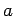

Trapez wird ein Viereck genannt, bei dem zwei Seiten zueinander parallel sind.
Mit den Bezeichnungen a und b für die beiden Grundlinien des Trapezes, h für die Höhe und m für die Mittellinie, die die Mittelpunkte der beiden nicht parallelen Seiten miteinander verbindet, ergibt sich
| (3.32) |
| (3.33) |
Der Schwerpunkt liegt auf der Verbindungslinie der Mitten der parallelen Grundlinien a und b im Abstand hS (3.34) von der Grundlinie . Die Berechnung der Schwerpunktkoordinaten erfolgt durch Integration (s. Schwerpunkt eines Trapezes).
Im gleichschenkligen Trapez mit d=c ist:
| (3.35) |